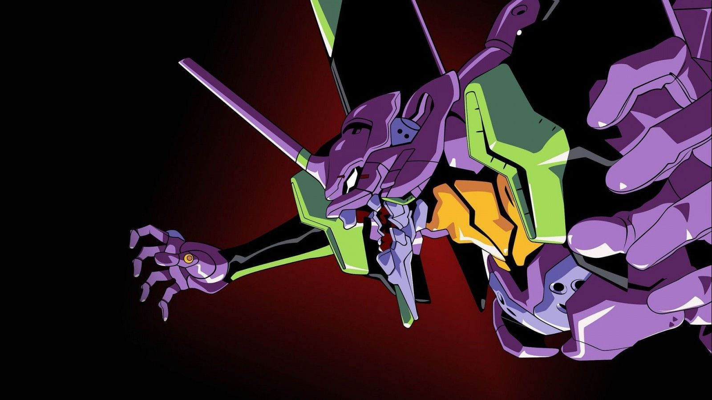
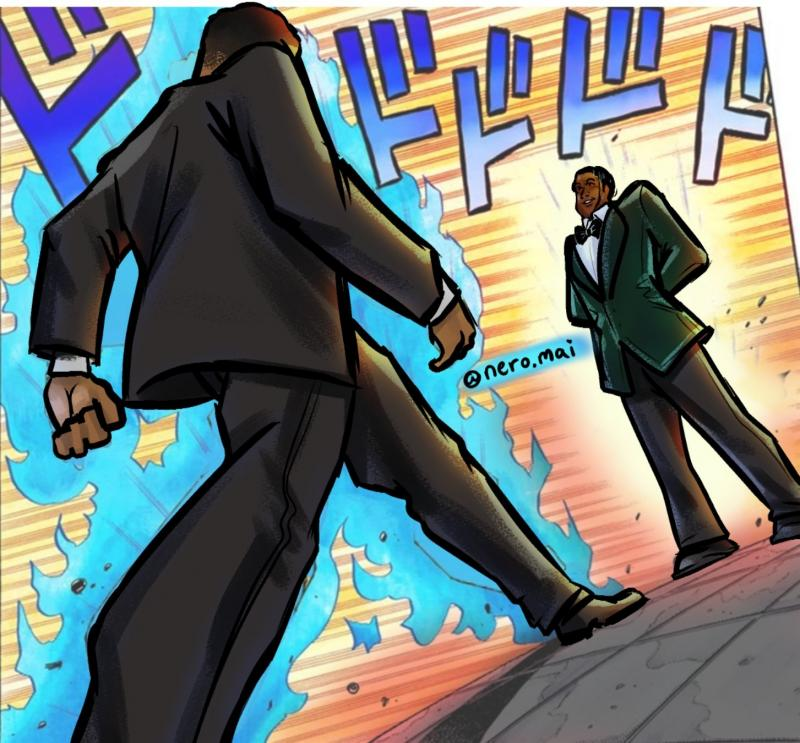
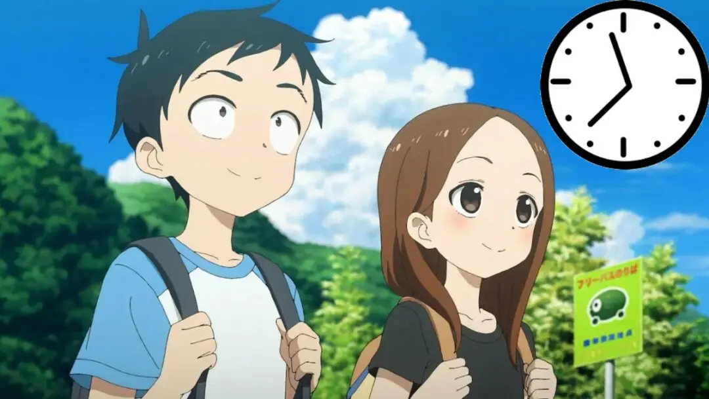

Cultura Otaku
Evangelion: Encuentran una ilustración de Asuka entre los escombros en Ucrania
Una serie de fotografías de la 6A Lobanovsky Avenue en Kiev, Ucrania, se volvieron virales en foros de comentarios
en Japón. Como escribió el Servicio Estatal de Emergencias de Ucrania en Telegram, un misil impactó en un bloque
de apartamentos de varias plantas (17-18 pisos). En su momento no se informó sobre víctimas y la evacuación estaba
en marcha.
Así, el usuario de Twitter “Southwood (@Southwood_)” comenzó a compartir una variedad de fotografías verificadas del
lugar del los hechos hacia sus seguidores japoneses, que se volvieron inmensamente virales dado que una de las
fotografías mostraba los restos de una ilustración de Asuka Langley, uno de los personajes principales de la
franquicia de Neon Genesis Evangelion.
Leer más...
Cultura Otaku
The Quintessential Quintuplets se luce en un nuevo tráiler de su película
La web oficial de la película Eiga Gotoubun no Hanayome, o The Quintessential Quintuplets the Movie, ha revelado un
nuevo tráiler de esta esperada secuela de la serie The Quitenssential Quintuplets, la cual se estrenará el 20 de
mayo en cines japoneses. En el vídeo podemos escuchar el que será el tema musical principal de la película,
"Go-toubun no Kiseki".
Yoshitsugu Matsuoka (Fuutarou), Ayana Taketatsu (Nino) y Ayane Sakura (Yotsuba) estuvieron en la presentación dedicada
a la película en el AnimeJapan 2022 para mostrar el tráiler y másLa película contará con un total de 130 minutos de
metraje y llega tras las dos temporadas de la serie de televisión, cuya segunda temporada se estrenaba en enero de
2021 y finalizaba en marzo.
Leer más...

Cultura Otaku
El golpe de Will Smith en los Óscar recordó un meme de JoJo’s Bizarre Adventure
En la noche de la nonagésima cuarta entrega anual de los Premios Óscar ocurrió un inédito evento: el actor Will Smith
golpeó/abofeteó al actor y comediante Chris Rock después de que este último hiciera una broma de mal gusto sobre la
alopecia de la esposa de Smith, Jada Pinkett Smith, insinuando que podría protagonizar la secuela de la película
GI Jane (Hasta el Límite), en donde la protagonista, la teniente Jordan O’Neil, se rapa la cabeza como parte de su
entrenamiento militar.
Por supuesto, algunos aseguran que este “altercado” fue simplemente para que la noche de los Premios Óscar se volviera
tendencia en redes sociales y recuperara el rating en televisión que ha perdido en los últimos años. De ser cierto,
el objetivo se cumplió, puesto que todo el mundo está hablando de ello.
Leer más...

Cultura Otaku
Karakai Jouzu no Takagi-san revela un avance para su próxima película
En el sitio oficial para la adaptación al anime del manga de Souichirou Yamamoto, Karakai Jouzu no Takagi-san
(Teasing Master Takagi-san), se publicó un nuevo video promocional para la próxima adaptación cinematográfica de
la franquicia. El comunicado de prensa mantiene la fecha de estreno programada para el próximo 10 de junio en
cines de Japón
Souichirou Yamamoto comenzó la publicación del manga original a través de la revista Monthly Shonen Sunday de la
editorial Shogakukan en junio de 2013. La obra inspiró una adaptación al anime de doce episodios producida por
los estudios Shin-Ei Animation, bajo la dirección de Hiroaki Akagi y guiones escritos por Michiko Yokote, estrenada
en enero de 2018, con una segunda temporada estrenada en julio de 2019 y una tercera temporada de doce episodios
estrenada en enero de 2022.
Leer más...